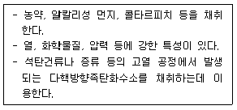

산업위생관리기사 (2008-03-02 기출문제)
1과목: 산업위생학개론
1. 다음 중 역사상 최초로 기록된 직업병은?
- 수은중독
- 음낭암
- 규폐증
- 납중독
(정답률: 87%)

2. 다음 중 산업피로에 관한 설명으로 틀린 것은?
- 생체기능의 변화 현상이므로 객관적 측정이 가능하고, 과학적 개념을 명확하게 파악할 수 있다.
- 작업능률이 떨어지고 재해와 질병을 유인한다.
- 피로자체는 질병이 아니라 가역적인 생체 변화이다.
- 정신적, 육체적 그리고 신경적인 노동 부하에 반응하는 생체의 태도이다.
(정답률: 92%)
3. 피로는 그 정도에 따라 보통 3단계로 나눌 수 있는데 피로도가 증가하는 순서대로 올바르게 배열된 것은?
- 곤비상태 → 보통피로 → 과로
- 보통피로 → 과로 → 곤비상태
- 보통피로 → 곤비상태 → 과로
- 곤비상태 → 과로 → 보통피로
(정답률: 90%)
4. 산소소비량 1L를 에너지량, 즉 작업대사량으로 환산하면 약 몇 kcal 인가?
- 5
- 10
- 15
- 20
(정답률: 49%)
5. 미국장부산업위생전문가협의회(ACGIH)에서 제시한 하용농도(TLV) 적용상의 주의사항으로 틀린 것은?
- 대기오염 평가 및 관리에 적용한다.
- 독성의 강도를 비교할 수 있는 지표로 사용하지 않아야 한다.
- 24시간 노출 또는 정상 작업시간을 초과한 노출에 대한 독성평가에 적용하여서는 아닌 된다.
- 안전농도와 위험농도를 정확히 구분하는 경계선으로 사용하여서는 아니 된다.
(정답률: 88%)
6. 산업위생관리 측면에서 피로의 예방 대책으로 적절하지 않는 것은?
- 작업과정에 적절한 간격으로 휴식시간을 둔다.
- 각 개인에 따라 작업량을 조절한다.
- 개인의 숙련도 등에 따라 작업속도를 조절한다.
- 동적인 작업을 모두 정적인 작업으로 전환한다.
(정답률: 96%)
7. 사이또와 오시마(大馬)가 제시한 관계식을 기준으로 작업대사율이 7 인 경우 계속작업의 한계시간은 약 얼마인가?
- 5분
- 10분
- 20분
- 30분
(정답률: 60%)
8. 다음 중 피로를 느끼게 하는 물질대사에 의한 노폐물이 아닌 것은?
- 젖산
- 콜레스테롤
- 크레아티닌
- 시스테인
(정답률: 74%)
9. 산업재해의 지표 중 도수율을 바르게 나타낸 것은?
- 재해발생건수/연근로시간수×1,000,000
- 작업손실일수/연근로시간수×1,000
- 작업손실일수/연평균근로자수×1,000,000
- 재해발생건수/연평균근로자수×1,000
(정답률: 80%)
10. 다음 중 근골격계질환의 특징으로 가장 거리가 먼 것은?
- 한번 악화되면 완치가 쉽게 가능하다.
- 노동력 손실에 따른 경제적 피해가 크다.
- 관리의 목표는 최소화에 있다.
- 단편적인 작업환경개선으로 좋아질 수 없다.
(정답률: 87%)
11. 다음 중 바람직한 교대 근무제가 아닌 것은?
- 야간 근무는 2～3일 이상 연속하지 않는다.
- 12시간 교대제는 적용하지 않는 것이 좋다.
- 야근의 교대시간은 심야에 하는 것이 좋다.
- 야근 근무기간 종료 후 다음 야근 근무 시작과의 간격은 최소 48시간 이상으로 한다.
(정답률: 81%)
12. 미국정부산업위생전문가협의회(ACGIH)에서 제정한 TLVs(Threshold Limit Values)의 설정근거가 아닌 것은?
- 허용기준
- 동물실험자료
- 인체실험자료
- 사업장 역학조사
(정답률: 53%)
13. 산업재해 통계를 구할 때 사망 및 영구 전노동불능인 경우 근로손실일수는 얼마로 산정하는가? (단, ILO(국제노동기구)의 산정기준에 따른다.)
- 2,000일
- 3,000일
- 5,000일
- 7,500일
(정답률: 80%)
14. 다음 중 직업성 질환의 발생 요인과 관련 직종이 잘못 연결된 것은?
- 한냉 - 제빙
- 크롬 - 도금
- 조명부족 - 의사
- 유기용제 - 인쇄
(정답률: 88%)
15. 직업성 누적외상성질환(CTDs)과 관련이 가장 적은 직업의 형태는?
- 전화안내작업
- 컴퓨터 사무작업
- chain saw를 이용한 벌목작업
- 금전등록기의 계산작업
(정답률: 58%)
16. 영국에서 최초로 보고된 직업성 암의 종류는?
- 기관지암
- 골수암
- 폐암
- 음낭암
(정답률: 92%)
17. 다음 중 물질안전보건자료(MSDS) 작성시 반드시 포함 되어야 할 항목이 아닌 것은?
- 화학제품과 회사에 관한 정보
- 유해ㆍ위험성
- 노출방지 및 개인보호구
- 게시방법 및 위치
(정답률: 81%)
18. 아세톤(TLV=750ppm) 200ppm 과 톨루엔(TLV=100ppm) 45ppm 이 각각 노출되어 있는 실내 작업장에서 노출기준의 초과 여부를 평가한 결과로 올바른 것은?
- 복합노출지수가 약 0.72 이므로 노출기준 미만이다.
- 복합노출지수가 약 5.97 이므로 노출기준 미만이다.
- 복합노출지수가 약 0.72 이므로 노출기준을 초과 하였다.
- 복합노출지수가 약 5.97 이므로 노출기준을 초과 하였다.
(정답률: 85%)
19. 다음 중 허용농도 상한치(excursion limits)에 대한 설명으로 틀린 것은?
- 단시간허용노출기준(TLV-STEL)이 설정되어 있지 않는 물질에 대하여 적용한다.
- 시간가중평균치(TLV-TWA)의 3배는 1시간 이상을 초과할 수 없다.
- 시간가중평균치(TLV-TWA)의 5배는 잠시라도 노출되어서는 안된다.
- 시간가중평균치(TLV-TWA)가 초과되어서는 아니 된다.
(정답률: 82%)
20. 하인리히의 재해구성 비율을 기준으로 하여 사망 또는 중상이 1회 발생햇을 경우 무상해사고는 몇 건이 발생하겠는가?
- 10건
- 29건
- 300건
- 600건
(정답률: 85%)
2과목: 작업위생측정 및 평가
21. 작업장내의 오염물질 측정방법인 검지관법에 관한 설명으로 틀린 것은?
- 민감도가 높다.
- 특이도가 낮다.
- 색변화가 선명하지 않아 주관적으로 읽을 수 있다.
- 검지관은 한가지 물질에 반응할 수 잇도록 제조되어 있어 측정대상물질의 동정이 되어 있어야 한다.
(정답률: 60%)
22. 석면분진 측정방법에서 공기 중 석면시료를 가장 정확하게 분석할 수 있고 석면의 성분 분석이 가능하며 매우 가는 섬유도 관찰 가능하다 값이 비싸고 분석시간이 많이 소요되는 것은?
- 위상차현미경법
- 편광현미경법
- X-선 회절법
- 전자현미경법
(정답률: 82%)
23. 작업장 기본특성 파악을 위한 예비조사 내용 중 유사노출 그룹(HEG) 설정에 관한 설명으로 알맞지 않은 것은?
- 조작, 공정, 작업범주 그리고 공정과 작업내용별로 구분하여 설정하다.
- 역학조사를 수행할 때 사건이 발생된 근로자와 다른 노출그룹의 노출농도를 근거로 사건 발생된 노출농도를 추정할 수 있다.
- 모든 근로자의 노출농도를 평가하고자 하는데 목적이 있다.
- 모든 근로자를 유사한 노출그룹별로 구분하고 그룹별로 대표적인 근로자를 선택하여 측정하면 측정하지 않은 근로자의 노출농도까지도 추정할 수 있다.
(정답률: 70%)
24. 작업환경 공기중의 유해물질에 대한 ACGIH 기관의 TLV 가 아닌 것은?
- TLV - TWA
- TLV - STEL
- TLV - C
- TLV -PEL
(정답률: 91%)
25. 원자 흡광 광도법의 구성순서로 알맞은 것은?
- 시료원자화부 - 광원부 - 측광부 - 단색화부
- 시료원자화부 - 파장선택부 - 시료부 - 측광부
- 광원부 - 파장선택부 - 시료부 - 측광부
- 광원부 - 시료원자화부 - 단색화부 - 측광부
(정답률: 60%)
26. 어떤 작업장에 40% Heptane(허용농도=1,600mg/m3), 50% methylene chloride(허용농도=720mg/m3), 10% perchloro ethylene(허용농도=670mg/m3)이 있다면 이 작업장의 혼합물의 허용농도는 몇 mg/m3인가?
- 914
- 1,014
- 1,114
- 1,214
(정답률: 78%)
27. 실내공간이 200m3인 빈실험실에 MEK(methyl ethyl ketone) 2mL가 기화되어 완전히 혼합되었다고 가정하면 이때 실내의 MEK농도는 몇 ppm인가? (단, MEK 비중=0.8⑤, 분자량=72.1, 25℃, 1기압 기준)
- 약 1.3
- 약 2.7
- 약 4.8
- 약 6.2
(정답률: 66%)
28. 어느 작업장의 n-Hexane의 농도를 측정한 결과 21.6ppm, 23.2ppm, 24.1ppm, 22.4ppm, 25.9ppm을 각각 얻었다. 기하평균치(ppm)는?
- 23.4
- 23.9
- 24.2
- 24.5
(정답률: 66%)
29. 온열조건을 측정하는 방법으로 잘못 설명된 것은?
- 흑구온도계는 복사온도를 측정한다.
- 아스만 통풍건습계의 습구온도는 자연 기류에 의한 온도이다.
- 사업장의 환경에서 기류의 방향이 일정하지 않던가 실내 0.2～0.5m/sec 정도의 불감기류를 측정할 때는 카타온도계로 기류속도를 측정한다.
- 풍차풍속계는 보통 1～150m/sec 범위의 풍속을 측정하는데 사용하며 옥외용이다.
(정답률: 35%)
30. 통계집단의 측정값들에 대한 균일성, 정밀성 정도를 표현하는 것으로 평균값에 대한 표준편차의 크기를 백분율로 나타낸 수치는?
- 신뢰한계도
- 표준분산도
- 변이계수
- 편차분산율
(정답률: 79%)
31. 가스크로마토그래프와 액체크로마토그래프(고성능)에 대한 설명으로 맞는 것은?
- 가스크로마토그래프와 액체크로마토그래프의 고정상은 가스이다.
- 액체크로마토그래프에 사용되는 시료는 휘발성인 것으로 분자량이 500 이하이다.
- 가스크로마토그래프는 시료의 회수가 용이하여 열안정성의 고려가 필요 없는 장점이 있다.
- 가스크로마토그래프의 분리 기전은 흡착, 탈착, 분배이다.
(정답률: 37%)
32. 흡착제에 대한 설명 중 옳지 않은 것은?
- 실리카 및 알루미나계 흡착제는 그 표면에서 물과 같은 극성분자를 선택적으로 흡착 한다.
- 흡착제의 선정은 대개 극성오염물질이면 극성흡착제를 비극성오염물질이면 비극성흡착제를 사용하나 반드시 그러하지는 않다.
- 활성탄은 다른 흡착제에 비하여 큰 비표면적을 갖고 있다.
- 활성탄은 탄소의 불포화결합을 가진 분자를 선택적으로 흡착한다.
(정답률: 59%)
33. 원자가 가장 낮은 에너지 상태인 바닥에서 에너지를 흡수하면 들뜬 상태가 되고 들뜬 상태의 원자들이 낮은 에너지 상태로 돌아올 때 에너지를 방출하게 된다. 금속마다 고유한 방출스펙트럼을 갖고 있으며 이를 측정하여 중금속을 분석하는 장비는?
- 불꽃 원자흡광광도계
- 비불꽃 원자흡광광도계
- 이온크로마토그래피
- 유도결합플라즈마발광광도계
(정답률: 67%)
34. 가스크로마토그래피에 적용되는 크로마토그래피의 이론으로 틀린 것은?
- 두 물질의 분배계수값 차이가 클수록 분리가 잘 된다는 것을 의미한다.
- 분배계수가 크다는 것은 분리관에 머무르는 시간이 길다는 것이다.
- 같은 분자라 할지라도 머무름시간은 실험조건에 따라 다르므로 절대값이 아닌 상대적 머무름시간으로 나타낼 수 있다.
- 분리관에서 분해능을 높이려면 시료와 고정상의 양을 늘리고 온도를 높여야 한다.
(정답률: 82%)
35. 다음이 설명하는 막여과지는?

- 섬유상 막여과지
- PVC 막여과지
- 은 막여과지
- PTFE 막여과지
(정답률: 82%)
36. 납 취급사업장에서 납의 농도를 측정하고자 한다. 총 공기 채취량은 360L 였다. 시료와 공시료는 전처리 후에 각각 5% 질산 10mL로 추출하여 원자흡광분석기로 분석하였다. 분석결과가 납 채취시료에서 7μg/mL로 나타났으며 회수율은 99%였다. 공기 중 납 농도는?(오류 신고가 접수된 문제입니다. 반드시 정답과 해설을 확인하시기 바랍니다.)
- 약 0.18mg/m3
- 약 0.26mg/m3
- 약 0.38mg/m3
- 약 0.48mg/m3
(정답률: 46%)
37. 산소결핍 위험장소에서의 산소농도나 가연성물질 등의 농도 측정 시기가 잘못 설명된 것은?
- 작업 당일 일을 시작하기 전
- 교대조 작업의 경우 마지막 작업을 시작하기 전
- 작업종사자의 전체가 작업장소를 떠났다가 들어와 다시 작업을 개시하기 전
- 근로자의 신체나 환기장치 등에 이상이 있을 때
(정답률: 75%)
38. 고체 흡착제를 이용하여 가스상 시료를 채취할 때 영향을 주는 인자에 대한 설명이 잘못된 것은?
- 고온일수록 흡착성질이 감소하며 파과가 일어나기 쉽다.
- 습도가 높으면 파과 공기량이 적어진다.
- 오염물질의 농도가 높을수록 파과 용량이 감소한다.
- 흡착제 입자의 크기가 작을수록 채취효율이 증가한다.
(정답률: 67%)
39. 가스상물질에 대한 시료채취 방법 중 순간시료채취 방법을 사용할 수 없는 경우와 가장 거리가 먼 것은?
- 오염물질의 농도가 시간에 따라 변할 때
- 반응성이 없는 가스상 오염물질일 때
- 시간 가중 평균치를 구하고자 할 때
- 공기 중 오염물질의 농도가 낮을 때
(정답률: 55%)
40. 시료분석을 하기 위하여 흡광광도법으로 분석원소의 농도를 정량할 때 광원부에 주로 사용하는 램프는? (단, 가시부와 근적외부의 광원 기준)
- 중공음극 램프
- 중소수 방전관
- 텅스텐 램프
- 석영저압 램프
(정답률: 85%)
3과목: 작업환경관리대책
41. 어떤 공장에서 메틸에칠케톤(허용기준 200ppm) 1,500mL/hr이 증발하여 작업장을 오염시키고 있다. 전체(희석)환기를 위한 필요환기량은? (단,K=6, 분자량=72, 메틸에칠케톤 비중=0.8⑤, 21℃, 1기압 상태 기준)
- 약 100(m3/min)
- 약 200(m3/min)
- 약 300(m3/min)
- 약 400(m3/min)
(정답률: 76%)
42. 강제환기를 실시할 때 환기효과를 제고하기 위한 원칙과 가장 거리가 먼 것은?
- 오염물질 배출구는 가능한 한 오염원으로부터 가까운 곳에 설치하여 ‘점환기’의 효과를 얻는다.
- 공기배출구와 근로자의 작업위치 사이에 오염원이 위치하여야 한다.
- 배출공기를 보충하기 위하여 청정공기를 공급한다.
- 오염원 주위에 다른 작업 공정이 있으면 공기배출량을 공급량보다 작게 하여 양(＋)압을 형성한다.
(정답률: 77%)
43. 작업환경관리 원칙 중 ‘대치’에 관한 설명으로 알맞지 않은 것은?
- 야광시계 자판에 Radium을 인으로 대치한다.
- 건조 전에 실시하던 점토배합을 건조 후 실시한다.
- 금속세척작업시 TCE를 대신하여 계면활성제를 사용한다.
- 분체 입자를 큰 입자로 대치한다.
(정답률: 71%)
44. 확대각이 10°인 원형 확대관에서 입구직관의 정압은 -20mmH2O, 속도압은 33mmH2OO이고, 확대전 출구 직관의 속도압은 25mmH2O이다. 압력손실은? (단, 확대각이 10°일 때 압력손실계수 ζ=0.28 이다.)
- 1.25mmH2O
- 2.24mmH2O
- 3.16mmH2O
- 4.24mmH2O
(정답률: 53%)
45. 회전차 외경이 600mm인 레이디얼 송풍기의 풍량은 300m3/min, 송풍기 전압은 60mmH2O, 축동력이 0.80kW이다. 회전차 외경이 1,200mm로 상사인 레이디얼 송풍기가 같은 회전수로 운전된다면 이 송풍기의 축동력은? (단, 두 경우 모두 표준공기를 취급한다.)
- 20.2kW
- 21.4kW
- 23.4kW
- 25.6kW
(정답률: 58%)
46. 작업대 위에서 용접을 할 때 흄을 제거하기 위해 작업면위에 플렌지가 붙고 면에 고정된 외부식 후드를 설치하였다. 개구면에서 포착점까지의 거리는 0.25m, 제어속도는 0.5m/s, 후드개구 면적이 0.5m2 일 때 송풍량은?
- 약 11m3/min
- 약 17m3/min
- 약 21m3/min
- 약 28m3/min
(정답률: 69%)
47. 외부식 후드에서 플렌지가 붙고 공간에 설치된 후드와 플렌지가 붙고 면에 고정설치된 후드의 필요 공기량을 비교할 때 면에 고정설치된 후드는 공간에 설치된 후드에 비하여 필요공기량을 약 몇 % 절감할 수 있는가?
- 13%
- 23%
- 33%
- 43%
(정답률: 74%)
48. 폭 320mm, 높이 760mm의 곧은 각관 내를 Q=280m3/분의 표준공기가 흐르고 있을 때 레이놀드수(Re) 값은? (단, 동점성계수는 1.5×10-5m2/sec 이다.)
- 3.76×105
- 3.76×106
- 5.76×105
- 5.76×106
(정답률: 60%)
49. 배기 덕트로 흐르는 오염공기의 속도압이 4mmH2O 이라면 덕트 내 오염공기의 유속은? (단, 오염공기밀도 1.2kg/m3)
- 4.6m/sec
- 5.3m/sec
- 6.7m/sec
- 8.1m/sec
(정답률: 68%)
50. 세정식 제진장치의 사용시 문제점에 대한 설명중 틀린 것은?
- 폐수의 처리
- 공업용수의 과잉사용
- 한랭기에 의한 동결
- 배기의 상승 확산력 증가
(정답률: 52%)
51. 선반제조 공정에서 선반을 에나멜에 담갔다가 건조시키는 작업이 있다. 이 공정의 온도는 177℃이고 에나멜이 건조될 때 Xylene 4 L/hr가 증발한다. 폭발 방지를 위한 환기량은? (단, Xylene의 LEL=1%, SG=0.88, MW=106, C=10, 21℃, 1기압 기준, 온도보정 고려하지 않음)
- 약 14m3/min
- 약 19m3/min
- 약 27m3/min
- 약 32m3/min
(정답률: 30%)
52. 사무실 직원이 모두 퇴근한 직후인 오후 6시 20분에 측정한 공기 중 이산화탄소 농도는 1,200ppm, 사무실이 빈상태로 1시간이 경과한 오후 7시 20분에 측정한 이산화탄소 농도는 400ppm이었다. 이 사무실의 시간당 공기교환 횟수는? (단, 외부공기 중의 이산화탄소의 농도는 330ppm 임)
- 0.56
- 1.22
- 2.52
- 4.26
(정답률: 59%)
53. 전체환기를 하는 것이 적절하지 못한 경우는?
- 오염발생원에서 유해물질 발생량이 적어 국소배기설치가 비효율적인 경우
- 일 사업장에 소수의 오염발생원이 분산되어 있는 경우
- 오염발생원이 근로자가 근무하장소로부터 멀리 떨어져 있거나 공기 중 유해물질농도가 노출기준 이하인 경우
- 오염발생원이 이동성인 경우
(정답률: 43%)
54. 길이가 2.4m, 폭이 0.4m 인 플랜지 부착 슬로트형 후드가 설치되어 있다. 포촉점까지의 거리가 0.5m, 제어속도가 0.8m/s 일 때 필요 송풍량은? (단, 1/2 원주 슬로트형, C=2.8 적용)
- 20.2 m3/min
- 40.3 m3/min
- 80.6 m3/min
- 161.3 m3/min
(정답률: 45%)
55. 다음과 같은 조건에서 오염물질의 농도가 200ppm까지 도달하였다가 오염물질 발생이 중지되었을 때, 공기 중 농도가 200ppm에서 25ppm으로 감소하는 데 얼마나 걸리는가? (단, 1차반응, 공간부피, 환기량 )
- 약 60분
- 약 90분
- 약 120분
- 약 150분
(정답률: 50%)
56. 분진대책 중의 하나인 발진의 방지 방법과 가장 거리가 먼 것은?
- 원재료 및 사용재료의 변경
- 생산기술의 변경 및 개량
- 습식화에 의한 분진발생 억제
- 밀폐 또는 포위
(정답률: 62%)
57. 송풍량이 200m3/min이고 송풍기 전압이 100mmH2O인 송풍기를 가동 할 때 소요동력은? (단, 송풍기의 효율은 0.6 이다.)
- 약 3.5kW
- 약 4.5kW
- 약 5.5kW
- 약 6.5kW
(정답률: 61%)
58. 88dB(A)의 음압수준이 발생되는 작업장에서 근로자는 차음 평가수가 19인 귀덮개를 착용하고 작업에 임하고 있다. 이 때 근로자에 노출되는 음압dB(A)수준은? (미국 OSHA 방법으로 계산할 것)
- 74
- 78
- 82
- 86
(정답률: 70%)
59. 분압이 2.5mmHg인 물질이 표준상태의 공기중에서 증발하여 도달할 수 있는 최고 농도(ppm)는?
- 약 2,580
- 약 3,290
- 약 4,350
- 약 5,530
(정답률: 58%)
60. 총흡음량이 500sabins인 소음발생작업장에 흡음재를 천장에 설치하여 2,000sabins 더 추가하였다. 이 작업장에서 기대되는 소음 감소(NR : dB(A))는?
- 약 3
- 약 5
- 약 7
- 약 9
(정답률: 67%)
4과목: 물리적유해인자관리
61. 다음 중 자외선에 대한 설명으로 틀린 것은?
- 가시광선과 전리복사선 사이의 파장을 가진 전자파이다.
- 280~315nm 의 파장을 가진 자외선을 “ Dorno선” 이라 한다.
- 전리 및 사진감광작용은 현저하지만 형광, 광이온 작용은 거의 나타나지 않는다.
- 280~315nm의 파장을 가진 자외선은 피부의 색소 침착, 소독작용, 비타민 D 형성 등 생물학적 작용이 강하다.
(정답률: 61%)
62. 다음 중 이상기압에서 작업방법으로 적절하지 않는 것은?
- 감압병이 발생하였을 때는 환자는 바로 고압환경에 복귀시킨다.
- 특별히 잠수에 익숙한 사람을 제외하고는 1분에 10m 정도씩 잠수하는 것이 안전하다.
- 감압이 끝날 무렵에 순수한 산소를 흡입시키면 감압시간을 단축시킬 수 있다.
- 고압 환경에서 작업할 때에는 질소를 불소로 대치한 공기를 호흡시킨다.
(정답률: 74%)
63. 다음 중 적외선의 생체작용에 대한 설명으로 틀린 것은?
- 조직에 흡수된 적외선은 화학반응을 일으키는 것이 아니라 구성분자의 운동에너지를 증대시킨다.
- 만성폭로에 따라 눈장해인 백내장을 일으킨다.
- 700nm 이하의 적외선은 눈의 각막을 손상시킨다.
- 적외선이 체외에서 조사되면 일부는 피부에서 반사되고 나머지만 흡수된다.
(정답률: 75%)
64. 고압환경의 인체작용 중 2차적인 가압현상에 대한 내용을 틀린 것은?
- 4기압 이상에서 공기 중의 질소가스는 마취작용을 나타낸다.
- 산소의 분압이 2기압을 넘으로 산소중독증세가 나타난다.
- 흉곽이 잔기량부다 적은 용량까지 압축되면 폐압박 현상이 나타난다.
- 이산화탄소는 산소의 독성과 질소의 마취작용을 증강 시킨다.
(정답률: 53%)
65. 산업안전보건법에 규정한 소음작업이라 함은 1일 8시간 작업를 기준으로 몇 데시벨 이상의 소음를 발생하는 작업을 말하는가?
- 80
- 85
- 90
- 100
(정답률: 37%)
66. 소음성 난청인 C5-dip현상은 어느 주파수에서 잘 일어나는가?
- 2,000Hz
- 4,000Hz
- 6,000Hz
- 8,000Hz
(정답률: 92%)
67. 실효음압이 2×10-3N/m2인 음의 음압수준은 몇 dB 인가?
- 40
- 50
- 60
- 70
(정답률: 66%)
68. 0.1W의 음향출력을 발생하는 소형싸이렌의 음향파위레벨(LW)은 몇 dB 인가?
- 90
- 100
- 110
- 120
(정답률: 66%)
69. 다음 중 레이저(LASER)에 대한 설명으로 틀린 것은?
- 레이저는 유도방출에 의한 광선증폭을 뜻한다.
- 레이저는 보통 광선과느 달리 단일 파장으로 강력하고 예리한 지향성을 가졌다.
- 레이저장해는 광선의 파장과 특정 조직의 광선 흡수능력에 따라 장해출현 부위가 달라진다.
- 레이저의 피부에 대한 작용은 비가역적이며, 수포, 색소침착 등이 생길 수 있다.
(정답률: 53%)
70. 1 촉광의 광원으로부터 한 단위 입체작으로 나가는 광속의 단위를 무엇이라 하는가?
- 룩스(Lux)
- 램버트(Lambert)
- 캔들(Candle)
- 루멘(Lumen)
(정답률: 60%)
71. 다음 중 마이크로파의 생체작용과 가장 거리가 먼 것은?
- 체표면은 조기에 온감을 느낀다.
- 중추신경에 대해서는 300~1,200MHz 의 주파수 범위에서 가장 민감하다.
- 500～1,000Hz의 마이크로파는 백내장을 일으킨다.
- 백혈구의 증가, 혈소판의 감소 등을 나타낸다.
(정답률: 53%)
72. 전리방사선의 흡수선량이 생체에 영향을 주는 정도로 표시하는 선당량(생체실효선량)의 단위는?
- R
- Ci
- Sv
- Gy
(정답률: 59%)
73. 음의 크기 sone 과 음의 크기레벨 phon 과의 관계를 올바르게 나타낸 것은? (단, sone는 S, phon 은 L로 표현한다.)
- S=2(L-40)/10
- S=3(L-40)/10
- S=4(L-40)/10
- S=5(L-40)/10
(정답률: 63%)
74. 다음 중 피부 투과력이 가장 큰 것은?
- 적외선
- α선
- β선
- X선
(정답률: 86%)
75. 다음 중 레이저(LASER)에 감수성이 가장 큰 신체부위는?
- 대뇌
- 눈
- 갑상선
- 혈액
(정답률: 84%)
76. 다음 중 저압환경에서의 생체작용에 관한 내용을 틀린 것은?
- 고공증상으로 항공치통, 항공이염 등이 있다.
- 고공성 폐수종은 어른보다 아이들에게서 많이 발생한다.
- 급성고산병의 가장 특정적인 것은 흥분성이다.
- 급성고산병의 비가역적이다.
(정답률: 60%)
77. 실효복사(effective radiation)온도의 의미로 가장 적절한 것은?
- 건구온도와 습구온도의 차
- 습구온도와 흑구온도의 차
- 습구온도와 복구온도의 차
- 흑구온도와 기온의 차
(정답률: 60%)
78. 소음계(Sound Level meter)로 소음측정시 A 및 C 특성으로 측정하였다. 만약 C 특성으로 측정한 값이 A특성으로 측정한 값보다 휠씬 크다면 소음의 주파수영역은 어떻게 추정이 되겠는가?
- 저주파수가 주성분이다.
- 중주파수가 주성분이다.
- 고주파수가 주성분이다.
- 중 및 고주파수가 주성분이다.
(정답률: 63%)
79. 고열로 인한 건강장해로 발한에 의한 체열방출이 장해됨으로써 체내에 열이 축적되어 발생하며 1차적인 증상으로 정신착란, 의식결여, 경련 또는 혼수, 건조하고 높은 피부온도, 체온상승(직장 온도 41℃) 등이 나타나는 열중증의 명칭은?
- 열허탈(heat collapse)
- 열경련(heat cramps)
- 열사병(heat stroke)
- 열소모(heat exhaustion)
(정답률: 73%)
80. 다음 중 전신진동에 의한 건강장해의 설명으로 틀린 것은?
- 진동수 3Hz 이하이면 신체가 함께 움직여 motion sickness 와 같은 동요감을 느낀다.
- 진동수 4~12Hz에서 압박감과 동틍감을 받게 된다.
- 진동수 20~30Hz에서는 시력 및 청력장애가 나타나기 시작한다.
- 진동수 60~90Hz에서는 두개골이 공명하기 시작하여 안구가 공명한다.
(정답률: 60%)
5과목: 산업독성학
81. 화학물질의 상호작용인 길항작용 중 배분적 길항작용에 대하여 가장 적절히 설명한 것은?
- 두 물질이 생체에서 서로 반대되는 생리적 기능을 갖는 관계로 동시에 투여한 경우 독성이 상쇄 또는 감소되는 경우
- 두 물질을 동시에 투여한 경우 상호반응에 의하여 독성이 감소되는 경우
- 독성물질의 생체과정인 흡수, 분포, 생전환, 배설등의 변화를 일으켜 독성이 낮아지는 경우
- 두 물질이 생체내에서 같은 수용체에 결합하는 관계로 인하여 동시 투여시 경쟁관례로 인하여 독성이 감소되는 경우
(정답률: 49%)
82. 다음 중 유기분진에 의한 진폐증에 해당하는 것은?
- 석면폐증
- 규폐증
- 면페증
- 활석폐증
(정답률: 84%)
83. 다음 중 비소에 대한 설명으로 틀린 것은?
- 5가보다는 3가의 비소화합물이 독성이 강하다.
- 장기간 노출시 치아산식증을 일으킨다.
- 급성중독은 용혈성 빈혈을 일으킨다.
- 분말은 피부 또는 점막에 작용하여 염증 또는 궤양을 일으킨다.
(정답률: 56%)
84. 방향족 탄화수소 중 저농도에 장기간 노출되어 만성중독을 일으키는 경우에 가장 위험하다고 할 수 있는 유기용제는?
- 벤젠
- 톨루엔
- 클로로포름
- 사염화탄소
(정답률: 55%)
85. 국제암연구위원회(IARC)의 발암물질 구분 기준에서 인체 발암성 가능물질(Group 2B)의 종류에 해당되는 물질은?
- 벤젠
- 카드뮴
- 카페인
- 클로로포름
(정답률: 74%)
86. 다음 중 납중독의 임상증상과 가장 거리가 먼 것은?
- 위장장해
- 신경 및 근육계통의 장해
- 호흡기 계통의 장해
- 중추신경장해
(정답률: 57%)
87. 카드뮴에 노출되었을 때 체내의 주된 축적 기관은?
- 간, 신장, 장관벽
- 심장, 뇌, 비장
- 뼈, 피부, 근육
- 혈액, 신경, 모발
(정답률: 71%)
88. 다음 중 크롬에 급성중독의 특징으로 가장 알맞은 것은?
- 혈액장해
- 신장장해
- 피부습진
- 중추신경장해
(정답률: 64%)
89. 다음 중 직업성 피부염을 평가할 때 실시하는 가장 중요한 임상시험은?
- 생체시험(in vivo test)
- 실험생체시험(in vitro test)
- 첩포시험(patch test)
- 에임즈시험(ames assey)
(정답률: 82%)
90. 다음 중 벤젠의 생물학적 노출지표로 이용되는 주 대사산물은?
- 마뇨산
- 메틸마뇨산
- 페놀
- 삼수산화벤젠
(정답률: 78%)
91. 화학물질의 생리적 작용에 의한 분류에서 종말기관지 및 폐포점막 자극제에 해당되는 유해가스는?
- 불화수소
- 염화수소
- 아황산가스
- 이산화질소
(정답률: 40%)
92. 상대적 독성(수치는 독성의 크기)이 “2＋0→10"의 형태로 나타나는 화학적 상호작용은?
- 상가작용(additive)
- 가승작용(potenriation)
- 상쇄작용(antagonism)
- 상승작용(synergistic)
(정답률: 65%)
93. 다음 중 카드뮴의 만성중독 증상에 해당하지 않는 것은?
- 신장기능장해
- 폐기능장해
- 골격계 장해
- 중추신경장해
(정답률: 30%)
94. 유해물질의 경구투여용량에 따른 반응범위를 결정하는 독성검사에서 얻은 용량-반응 곡선(dose-response curve)에서 실험동물군의 50%가 일정시간 동안 죽는 치사량을 나타내는 것은?
- LC50
- LD50
- ED50
- TD50
(정답률: 80%)
95. 다음 중 수은중독 증상으로만 나열된 것은?
- 비중격천공, 인두염
- 구내염, 근육진전
- 급성뇌증, 신근쇠약
- 단백뇨, 칼슘대사 장애
(정답률: 74%)
96. 구리의 독성에 대한 인체실험 결과 안전흡수량이 체중 kg당 0.009mg 이었다. 1일 8시간 작업시의 허용 농도는 약 몇 mg/m3 인가? (단, 근로자의 평균 체중은 70kg, 작업시의 폐환기율은 1.45m3/h 로 가정한다.)(오류 신고가 접수된 문제입니다. 반드시 정답과 해설을 확인하시기 바랍니다.)
- 0.035
- 0.048
- 0.⑤6
- 0.064
(정답률: 24%)
97. “니트로벤젠”의 화학물질의 영향에 대한 생물학적 모니터링 대상으로 옳은 것은?
- 혈액에서의 메타헤모글로빈
- 요에서의 마뇨산
- 요에서의 저분자량 단백질
- 적혈구에서의 ZPP
(정답률: 69%)
98. 다음 중 생물학적 모니터링을 위한 시료가 아닌 것은?
- 공기 중 유해인자
- 혈액 중의 유해인자나 대사산물
- 요 중의 유해인자나 대사산물
- 호기(Exhales Air) 중의 유해인자나 대사산물
(정답률: 85%)
99. 다음 중 중추신경 억제작용이 가장 큰 것은?
- 알칸
- 알코올
- 에테르
- 에스테르
(정답률: 77%)
100. 다음 중 위험도를 나타내는 지표가 아닌 것은?
- 발생률
- 상대위험비
- 기여위험비
- 교차비
(정답률: 57%)